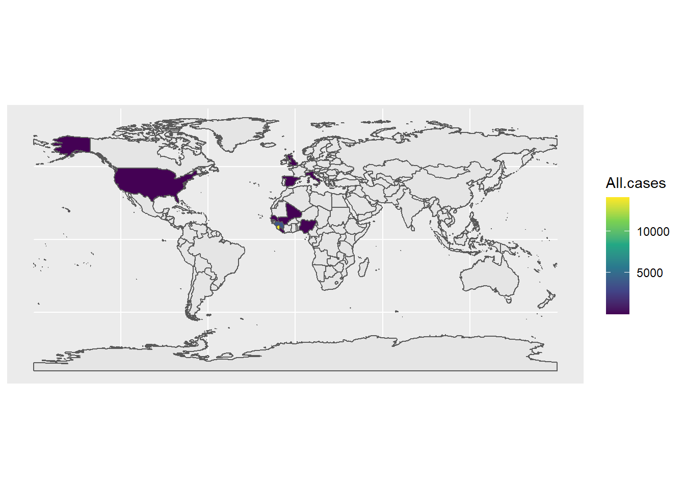

You will have to install:
rnaturalearthrnaturalearthdatargeoslibrary(tidyverse)
library(ggplot2)
library(viridis)## Loading required package: viridisLitelibrary(rnaturalearth)
requireNamespace('rgeos')## Loading required namespace: rgeosLoad our data with world bank features.
load("data/our.data.RData")Get world data geo-features from rnatualworld::ne_countries
world <- rnaturalearth::ne_countries(scale = "medium", returnclass = "sf")
class(world)## [1] "sf" "data.frame"glimpse(world)## Rows: 241
## Columns: 64
## $ scalerank <int> 3, 1, 1, 1, 1, 3, 3, 1, 1, 1, 3, 1, 5, 3, 1, 1, 1, 1, 1,...
## $ featurecla <chr> "Admin-0 country", "Admin-0 country", "Admin-0 country",...
## $ labelrank <dbl> 5, 3, 3, 6, 6, 6, 6, 4, 2, 6, 4, 4, 5, 6, 6, 2, 4, 5, 6,...
## $ sovereignt <chr> "Netherlands", "Afghanistan", "Angola", "United Kingdom"...
## $ sov_a3 <chr> "NL1", "AFG", "AGO", "GB1", "ALB", "FI1", "AND", "ARE", ...
## $ adm0_dif <dbl> 1, 0, 0, 1, 0, 1, 0, 0, 0, 0, 1, 0, 1, 1, 0, 1, 0, 0, 0,...
## $ level <dbl> 2, 2, 2, 2, 2, 2, 2, 2, 2, 2, 2, 2, 2, 2, 2, 2, 2, 2, 2,...
## $ type <chr> "Country", "Sovereign country", "Sovereign country", "De...
## $ admin <chr> "Aruba", "Afghanistan", "Angola", "Anguilla", "Albania",...
## $ adm0_a3 <chr> "ABW", "AFG", "AGO", "AIA", "ALB", "ALD", "AND", "ARE", ...
## $ geou_dif <dbl> 0, 0, 0, 0, 0, 0, 0, 0, 0, 0, 0, 0, 0, 0, 0, 0, 0, 0, 0,...
## $ geounit <chr> "Aruba", "Afghanistan", "Angola", "Anguilla", "Albania",...
## $ gu_a3 <chr> "ABW", "AFG", "AGO", "AIA", "ALB", "ALD", "AND", "ARE", ...
## $ su_dif <dbl> 0, 0, 0, 0, 0, 0, 0, 0, 0, 0, 0, 0, 0, 0, 0, 0, 0, 0, 0,...
## $ subunit <chr> "Aruba", "Afghanistan", "Angola", "Anguilla", "Albania",...
## $ su_a3 <chr> "ABW", "AFG", "AGO", "AIA", "ALB", "ALD", "AND", "ARE", ...
## $ brk_diff <dbl> 0, 0, 0, 0, 0, 0, 0, 0, 0, 0, 0, 0, 0, 0, 0, 0, 0, 0, 0,...
## $ name <chr> "Aruba", "Afghanistan", "Angola", "Anguilla", "Albania",...
## $ name_long <chr> "Aruba", "Afghanistan", "Angola", "Anguilla", "Albania",...
## $ brk_a3 <chr> "ABW", "AFG", "AGO", "AIA", "ALB", "ALD", "AND", "ARE", ...
## $ brk_name <chr> "Aruba", "Afghanistan", "Angola", "Anguilla", "Albania",...
## $ brk_group <chr> NA, NA, NA, NA, NA, NA, NA, NA, NA, NA, NA, NA, NA, NA, ...
## $ abbrev <chr> "Aruba", "Afg.", "Ang.", "Ang.", "Alb.", "Aland", "And."...
## $ postal <chr> "AW", "AF", "AO", "AI", "AL", "AI", "AND", "AE", "AR", "...
## $ formal_en <chr> "Aruba", "Islamic State of Afghanistan", "People's Repub...
## $ formal_fr <chr> NA, NA, NA, NA, NA, NA, NA, NA, NA, NA, NA, NA, NA, NA, ...
## $ note_adm0 <chr> "Neth.", NA, NA, "U.K.", NA, "Fin.", NA, NA, NA, NA, "U....
## $ note_brk <chr> NA, NA, NA, NA, NA, NA, NA, NA, NA, NA, NA, "Multiple cl...
## $ name_sort <chr> "Aruba", "Afghanistan", "Angola", "Anguilla", "Albania",...
## $ name_alt <chr> NA, NA, NA, NA, NA, NA, NA, NA, NA, NA, NA, NA, NA, NA, ...
## $ mapcolor7 <dbl> 4, 5, 3, 6, 1, 4, 1, 2, 3, 3, 4, 4, 1, 7, 2, 1, 3, 1, 2,...
## $ mapcolor8 <dbl> 2, 6, 2, 6, 4, 1, 4, 1, 1, 1, 5, 5, 2, 5, 2, 2, 1, 6, 2,...
## $ mapcolor9 <dbl> 2, 8, 6, 6, 1, 4, 1, 3, 3, 2, 1, 1, 2, 9, 5, 2, 3, 5, 5,...
## $ mapcolor13 <dbl> 9, 7, 1, 3, 6, 6, 8, 3, 13, 10, 1, NA, 7, 11, 5, 7, 4, 8...
## $ pop_est <dbl> 103065, 28400000, 12799293, 14436, 3639453, 27153, 83888...
## $ gdp_md_est <dbl> 2258.0, 22270.0, 110300.0, 108.9, 21810.0, 1563.0, 3660....
## $ pop_year <dbl> NA, NA, NA, NA, NA, NA, NA, NA, NA, NA, NA, NA, NA, NA, ...
## $ lastcensus <dbl> 2010, 1979, 1970, NA, 2001, NA, 1989, 2010, 2010, 2001, ...
## $ gdp_year <dbl> NA, NA, NA, NA, NA, NA, NA, NA, NA, NA, NA, NA, NA, NA, ...
## $ economy <chr> "6. Developing region", "7. Least developed region", "7....
## $ income_grp <chr> "2. High income: nonOECD", "5. Low income", "3. Upper mi...
## $ wikipedia <dbl> NA, NA, NA, NA, NA, NA, NA, NA, NA, NA, NA, NA, NA, NA, ...
## $ fips_10 <chr> NA, NA, NA, NA, NA, NA, NA, NA, NA, NA, NA, NA, NA, NA, ...
## $ iso_a2 <chr> "AW", "AF", "AO", "AI", "AL", "AX", "AD", "AE", "AR", "A...
## $ iso_a3 <chr> "ABW", "AFG", "AGO", "AIA", "ALB", "ALA", "AND", "ARE", ...
## $ iso_n3 <chr> "533", "004", "024", "660", "008", "248", "020", "784", ...
## $ un_a3 <chr> "533", "004", "024", "660", "008", "248", "020", "784", ...
## $ wb_a2 <chr> "AW", "AF", "AO", NA, "AL", NA, "AD", "AE", "AR", "AM", ...
## $ wb_a3 <chr> "ABW", "AFG", "AGO", NA, "ALB", NA, "ADO", "ARE", "ARG",...
## $ woe_id <dbl> NA, NA, NA, NA, NA, NA, NA, NA, NA, NA, NA, NA, NA, NA, ...
## $ adm0_a3_is <chr> "ABW", "AFG", "AGO", "AIA", "ALB", "ALA", "AND", "ARE", ...
## $ adm0_a3_us <chr> "ABW", "AFG", "AGO", "AIA", "ALB", "ALD", "AND", "ARE", ...
## $ adm0_a3_un <dbl> NA, NA, NA, NA, NA, NA, NA, NA, NA, NA, NA, NA, NA, NA, ...
## $ adm0_a3_wb <dbl> NA, NA, NA, NA, NA, NA, NA, NA, NA, NA, NA, NA, NA, NA, ...
## $ continent <chr> "North America", "Asia", "Africa", "North America", "Eur...
## $ region_un <chr> "Americas", "Asia", "Africa", "Americas", "Europe", "Eur...
## $ subregion <chr> "Caribbean", "Southern Asia", "Middle Africa", "Caribbea...
## $ region_wb <chr> "Latin America & Caribbean", "South Asia", "Sub-Saharan ...
## $ name_len <dbl> 5, 11, 6, 8, 7, 5, 7, 20, 9, 7, 14, 10, 23, 22, 17, 9, 7...
## $ long_len <dbl> 5, 11, 6, 8, 7, 13, 7, 20, 9, 7, 14, 10, 27, 35, 19, 9, ...
## $ abbrev_len <dbl> 5, 4, 4, 4, 4, 5, 4, 6, 4, 4, 9, 4, 7, 10, 6, 4, 5, 4, 4...
## $ tiny <dbl> 4, NA, NA, NA, NA, 5, 5, NA, NA, NA, 3, NA, NA, 2, 4, NA...
## $ homepart <dbl> NA, 1, 1, NA, 1, NA, 1, 1, 1, 1, NA, 1, NA, NA, 1, 1, 1,...
## $ geometry <MULTIPOLYGON [°]> MULTIPOLYGON (((-69.89912 1..., MULTIPOLYGO...Join the data together and convert to a sf which is geometric simle features data frame.
plot.data <- inner_join(our.data, world, c('iso3c'='iso_a3')) %>% sf::st_sf()We use geom_sf to create a geo-spatial layer. Here we create a base layer.
ggplot() + geom_sf(data=world)Then add our data layer with fill set to All.cases and use the continuous viridis scale for visibility.
ggplot() + geom_sf(data=world) + geom_sf(aes(fill=All.cases), data = plot.data) +
scale_fill_viridis_c() Let’s limit the view to just Africa and log transform the scale.
ggplot() +
geom_sf(data = world %>% filter(continent == 'Africa')) +
geom_sf(aes(fill=All.cases, geometry = geometry),
data = plot.data %>%
filter(continent == 'Africa') %>%
group_by(Country) %>%
group_modify(~filter(.x, `Country Report Date` == max(`Country Report Date`)))
, stat="unique") +
scale_fill_viridis_c(trans = 'log10')